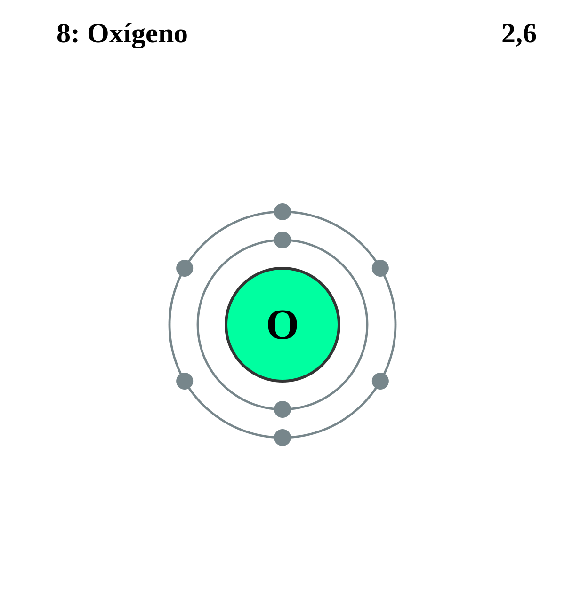

|
|
||
|
OXIGENO Su forma gaseosa es incolora, inodora e insípida. En sus formas líquida y sólida, el oxígeno es de color azul pálido; ambas son fuertemente paramagnéticas. Es un componente de cientos de miles de compuestos orgánicos y se combina fácilmente con la mayoría de elementos. El ozono (O3), una de sus formas alótropas, se forma cuando se somete el oxígeno a una descarga eléctrica o a luz ultravioleta. El gas oxígeno constituye el 21 % de la atmósfera por volumen y este elemento y sus compuestos conforman prácticamente la mitad de la masa de la corteza terrestre. Dos tercios del cuerpo humano y nueve décimas partes del agua son oxígeno. |
 |
DATOS Número Atómico: 8 Peso Atómico: 16 Electronegatividad: 3.44 Configuración Electrónica: [He]2s22p4 Estados de Oxidación: -2 No. de Electrones de Valencia: 6 |